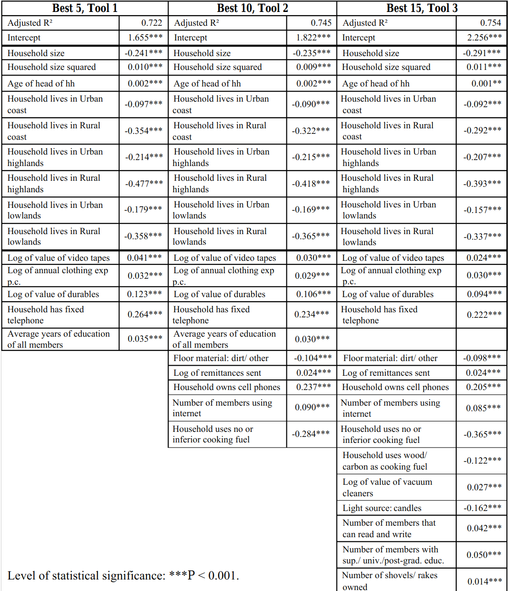

Survey Data
Data Sources
- Demographic and Health Survey (DHS)
- Household expenditure and Income survery
- Living standards measurement study (LSMS)
- Surveys conducted by National Statistics Office (NSO) of various countries
Choosing proxy variables
- Verifiability of the variable
- Correlation betweent the variable and household consumption levels
- We should not depend on any single or very few variables
- The variables may differ based on the region. For example for a rural area, livestock is important but not for urban area
Proxy Variables
- Human capital variables
- Education of household head
- Highest level of education in household
- Female literacy
- Number of childern in school
- Demographic characteristics
- Household size
- Number of children
- Gender / Marital status
- Age of Household head
- Dependency ratio
- Household assets
- Own home
- Type of wall construction
- Type of roofing material
- Type of latrine
- Number of rooms per capita
- Type of cooking fuel
- Radio, television and other forms of electronic or communication devices
- Bicycle, car, motorcycle or other means of owned transport
- Furniture
- Access to electricity
- Cooker, heater, fan, air-conditioning
- Productive assets
- Landholding size
- Livestock
- use of fertiliser
- Livelihood options
- Agricultural or nonfarm wage labour
- Non-farm independent business
- Agricultural production of cash or staple crops
- Receipt of foreign remittances
- Sector of work
- Community variables
- Presence of midwife
- Population density
- Asphalt road
- Bank in Community
- Divisional Secretariat in community

Reference:-